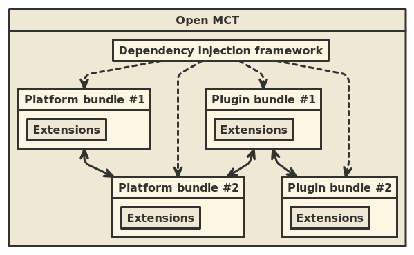
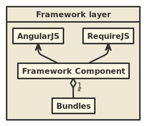
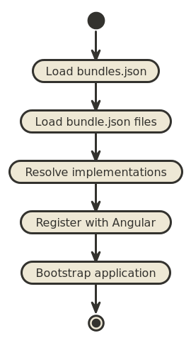
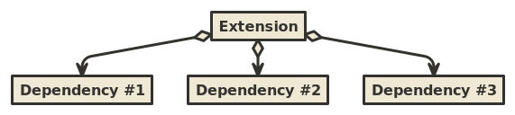
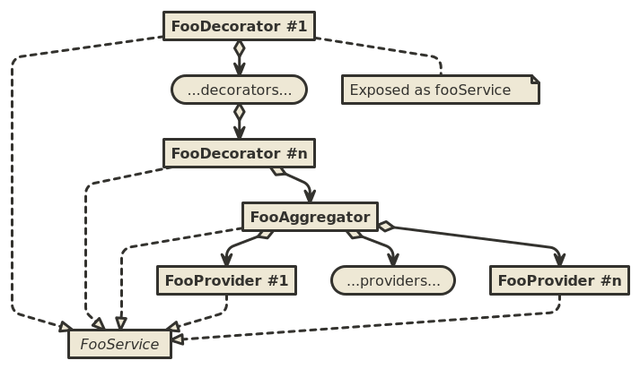

The framework layer's most basic responsibility is allowing individual software components to communicate. The software components it recognizes are:
The framework layer operates by taking a set of active bundles, and exposing extensions to one another as-needed, using dependency injection. Extensions are responsible for declaring their dependencies in a manner which the framework layer can understand.

The "dependency injection framework" in this case is AngularJS. Open MCT's framework layer is really just a thin wrapper over Angular that recognizes the concepts of bundles and extensions (as declared in JSON files) and registering extensions with Angular. It additionally acts as a mediator between Angular and RequireJS, which is used to load JavaScript sources which implement extensions.

It is worth noting that no other components are "aware" of the framework component directly; Angular and Require are used by the framework components, and extensions in various bundles will have their dependencies satisfied by Angular as a consequence of registration activities which were performed by the framework component.
The framework component initializes an Open MCT application following a simple sequence of steps.

bundles.json is loaded to determine
which bundles to load. Bundles are given in this file as relative paths
which point to bundle directories.bundle.json file is expected in each bundle directory.
Open MCT's architecture relies on a simple premise: Individual units (extensions) only have access to the dependencies they declare that they need, and they acquire references to these dependencies via dependency injection. This has several desirable traits:
A drawback to this approach is that it makes it difficult to define "the architecture" of Open MCT, in terms of describing the specific units that interact at run-time. The run-time architecture is determined by the framework as the consequence of wiring together dependencies. As such, the specific architecture of any given application built on Open MCT can look very different.
Keeping that in mind, there are a few useful patterns supported by the framework that are useful to keep in mind.
The specific service infrastructure provided by the platform is described in the Platform Architecture.
One of the capabilities that the framework component layers on top of AngularJS is support for many-to-one dependencies. That is, a specific extension may declare a dependency to all extensions of a specific category, instead of being limited to declaring specific dependencies.
This is useful for introducing specific extension points to an application. Some unit of software will depend upon all extensions of a given category and integrate their behavior into the system in some fashion; plugin authors can then add new extensions of that category to augment existing behaviors.
Some developers may be familiar with the use of registries to achieve similar characteristics. This approach is similar, except that the registry is effectively implicit whenever a new extension category is used or depended-upon. This has some advantages over a more straightforward registry-based approach:
Composite services (registered via extension category components) are
a pattern supported by the framework. These allow service instances to
be built from multiple components at run-time; support for this pattern
allows additional bundles to introduce or modify behavior associated
with these services without modifying or replacing original service
instances.

In this pattern, components all implement an interface which is standardized for that service. Components additionally declare that they belong to one of three types:
The framework will register extensions in this category such that an aggregator will depend on all of its providers, and decorators will depend upon on one another in a chain. The result of this compositing step (the last decorator, if any; otherwise the aggregator, if any; otherwise a single provider) will be exposed as a single service that other extensions can acquire through dependency injection. Because all components of the same type of service expose the same interface, users of that service do not need to be aware that they are talking to an aggregator or a provider, for instance.